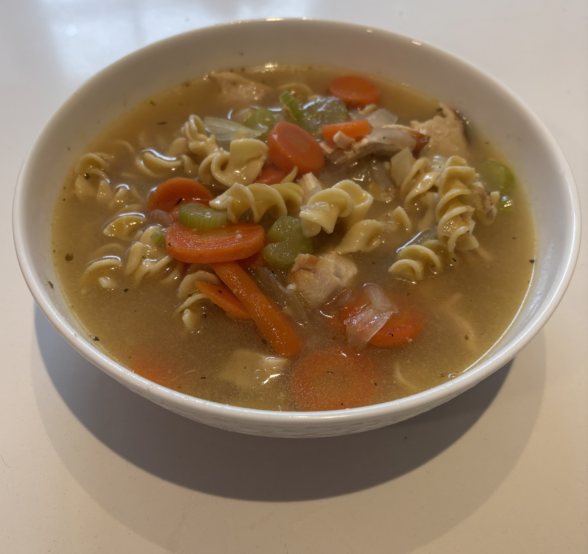

Home
Chicken Noodle Soup

Ingredients
- 1 chopped yellow onion
- 2 sliced carrots
- 2 chopped celery sticks
- 2 minced cloves garlic
- 12 cups low sodium chicken broth
- 1 cup shredded cooked chicken breast
- 2 cup egg noodles
- 1 tsp thyme
- 1 tbsp olive oil
Steps
- In a large pot, heat the oilive oil over medium heat
- Add diced onions, sliced carrots, and sliced celery. Saute until softened about 5 min
- Stir in minced garlic and saute for an additional 30 sec
- Pour in low sodium chicken broth and bring to a simmer
- Add shredded cooked chicken, dried thyme, salt, and black pepper. Stir to combine
- Simmer for 15-20 min
- Bring the soup back up to a boil and pour in the egg noodles cooking for the time on the package until noodles at desired softness